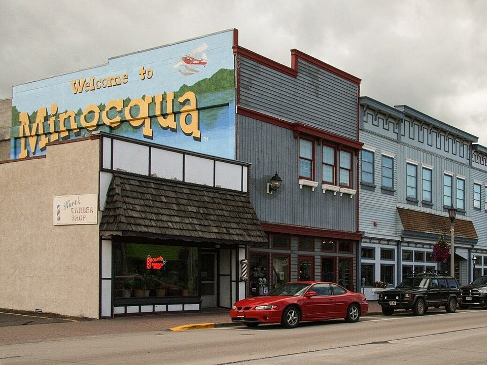

Lake Minocqua · Hotel
The Pointe Hotel & Suites
A lakefront hotel on Lake Minocqua with balconies over the water.
Official details for The Pointe Hotel & SuitesA Northwoods island town surrounded by lakes.
Minocqua sits on an island in a chain of lakes in Wisconsin’s Northwoods. Rent a pontoon, watch the Min-Aqua Bats water-ski show on a summer evening, bike the Bearskin State Trail through the pines, eat a lumberjack breakfast and finish with a classic Wisconsin supper club dinner.

Time illustration: direct distance at 150 KTAS plus 15 minutes for departure and arrival, matching the discovery page. Use ForeFlight for your actual flight plan.
KARV, Lakeland Airport (Noble F. Lee Memorial Field), is a non-towered field with a 5,150-foot runway in Woodruff, about 10 minutes from Minocqua.
Lakeland Airport, Woodruff, WI
Confirm FBO hours, fees and ground transportation. No live fuel price is shown.
Northwoods weather: summer thunderstorms, morning fog over the lakes, and long, snowy winters with icing. About 890 nm from Myrtle Beach: plan a fuel stop and three nights.
Rates and availability need travel dates. Summer weekends book early.
A lakefront hotel on Lake Minocqua with balconies over the water.
Official details for The Pointe Hotel & SuitesAn all-inclusive lodge retreat on Trout Lake in Arbor Vitae.
Official details for Red Crown LodgeResorts, cabins and rentals on the lakes.
Visit Minocqua for More places to stayPrices and availability for your dates, through our partner Stay22. This is an affiliate link: we may earn a commission at no cost to you. The picks above are never paid.
Reserve weekend dinners.
A classic Northwoods supper club.
Official details for Norwood Pines Supper ClubAll-you-can-eat lumberjack breakfasts.
Official details for Paul Bunyan’s Cook ShantyPlan around the water.
This prototype links to the local visitor site. It does not yet match events to your travel dates.
Evening water-ski shows.
Min-Aqua Bats for Min-Aqua Bats seasonMaples and tamaracks around the lakes.
Visit Minocqua for Fall colorSnowmobile and ski trails.
Check the local calendar when choosing a weekend, and confirm dates and tickets with the organizer.
A sample long weekend: lakes, a water-ski show and a supper club. Plan three nights for the flight. No bookings or availability confirmed.
Land at KARV early.
Walk the island and downtown.
A pontoon ride, then back to the airport.
Land at KARV, subject to weather, your fuel stop and your actual flight plan.
Walk downtown and the island.
Dinner at Norwood Pines.
Breakfast at Paul Bunyan’s.
Pontoon the chain of lakes.
The Min-Aqua Bats show.
Bike the Bearskin Trail.
Allow time at the airport.
Lake-effect weather can build quickly; leave early.
Bike the Bearskin Trail.
Wildwood Wildlife Park.
The Min-Aqua Bats show.
These details make the difference between an appealing list and a usable getaway.
Lodging first.
About 890 nm. Plan a fuel stop and three nights.
Old-fashioned, relish trays and Friday fish fry.
June to September.
Picks and links reviewed by WingAway Weekends. Hours, prices, menus and availability change often, so confirm directly with each place before booking. Spotted something out of date, or have a favorite we missed? Email us at hello@wingawayweekends.com.
WingAway Weekends helps you discover the destination. Use ForeFlight and current official aviation information for route, performance, weather, NOTAMs and preflight decisions. Flight planning and PIC responsibility stay with the pilot.
One fly-in weekend, a Fly to Lunch pick and the newest guides, about once a month.
Free. Unsubscribe anytime.